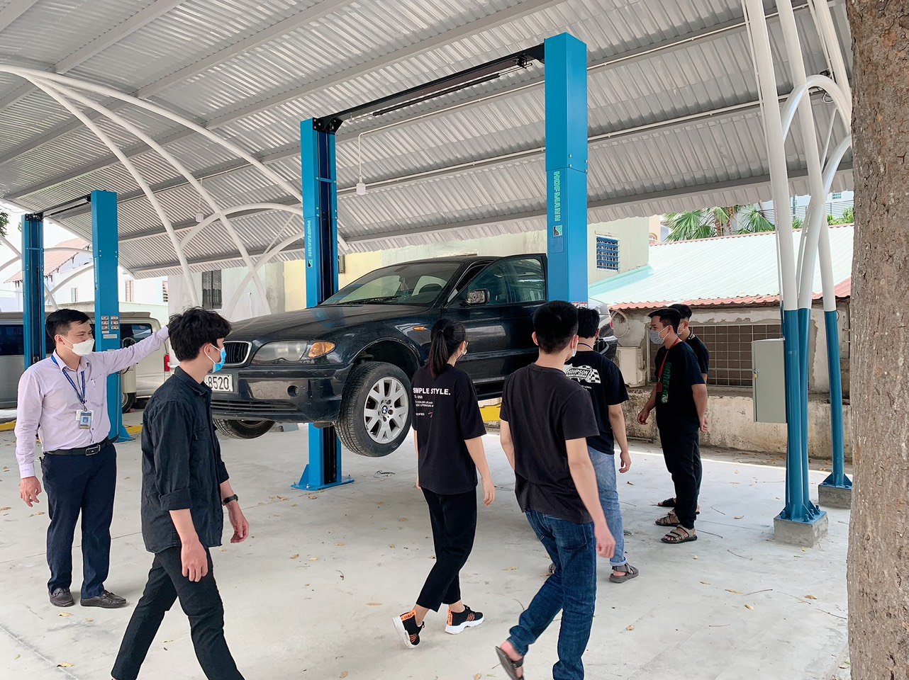

Phân hiệu Trường Đại học Giao thông Vận tải tại TP. Hồ Chí Minh được thành lập theo quyết định số 2419/QĐ-BGDĐT ngày 15 tháng 07 năm 2016 của Bộ trưởng Bộ Giáo dục và Đào tạo trên nền tảng Cơ sở II (được thành lập theo Quyết định số 139/TCCB ngày 27/04/1990 của Bộ Giáo dục và Đào tạo). Phân hiệu là một bộ phận cấu thành quan trọng của Trường Đại học Giao thông Vận tải trực thuộc Bộ Giáo dục và Đào tạo. Trường tọa lạc trên diện tích hơn 16ha tại Quận 9, Thành phố Hồ Chí Minh, quy mô đào tạo trên 7000 sinh viên và học viên các hệ.
Các ngành tổ chức đào tạo tại Phân hiệu Trường Đại học Giao thông Vận tải tại TP. Hồ Chí Minh gồm: Kỹ thuật Xây dựng công trình giao thông, Kỹ thuật Cơ khí, Kỹ thuật Xây dựng, Kỹ thuật Điện - Điện tử, Kỹ thuật môi trường, Công nghệ thông tin, Kinh tế Vận tải, Kế toán, Kinh tế xây dựng, Quản trị kinh doanh, Kinh tế, Khai thác vận tải, Kiến trúc với hơn 60 chuyên ngành đào tạo khác nhau. Bên cạnh loại hình đào tạo Đại học chính quy, Phân hiệu còn có nhiều loại hình đào tạo khác nhằm đáp ứng nhu cầu của xã hội và giúp người học có được sự thuận lợi, chủ động tối đa về thời gian theo học như: Vừa làm Vừa học, Liên thông, Văn bằng 2.
Đào tạo ở bậc sau đại học cũng luôn được Nhà trường quan tâm và chú trọng đầu tư phát triển. Hiện nay, tại Phân hiệu đang đào tạo 11 ngành bậc cao học (Kỹ thuật xây dựng công trình giao thông, Kỹ thuật Cơ sở hạ tầng, Kỹ thuật xây dựng công trình dân dụng và công nghiệp, Kỹ thuật cơ khí dộng lực, Kỹ thuật điện tử, Kỹ thuật Viễn thông, Kỹ thuật điều khiển và tự động hóa, Quản lý xây dựng, Tổ chức và quản lý vận tải, Quản trị kinh doanh, Công nghệ thông tin) với quy mô hàng năm hơn 200 học viên cao học và nghiên cứu sinh theo học.
Đội ngũ cán bộ giảng viên và cơ sở vật chất của Phân hiệu cũng luôn được quan tâm và phát triển. Tính đến tháng 05/2020 Phân hiệu có tổng số 199 cán bộ, viên chức và người lao động, trong đó có 139 Giảng viên với 03 Phó Giáo sư, 24 Tiến sĩ, 92 Thạc sĩ, có 24 giảng viên đang làm NCS, 08 giảng viên đang theo học Cao học, số giảng viên có trình độ trên đại học là gần 84%, nhiều giảng viên đang theo học chương trình đào tạo sau đại học trong nước và quốc tế. Hàng năm, các sinh viên tốt nghiệp giỏi, xuất sắc được Nhà trường tuyển chọn giữ lại làm giảng viên, nhiều giảng viên trẻ được cử đi học tập, nâng cao trình độ ở bậc sau đại học tại các trường đại học uy tín trên thế giới.
